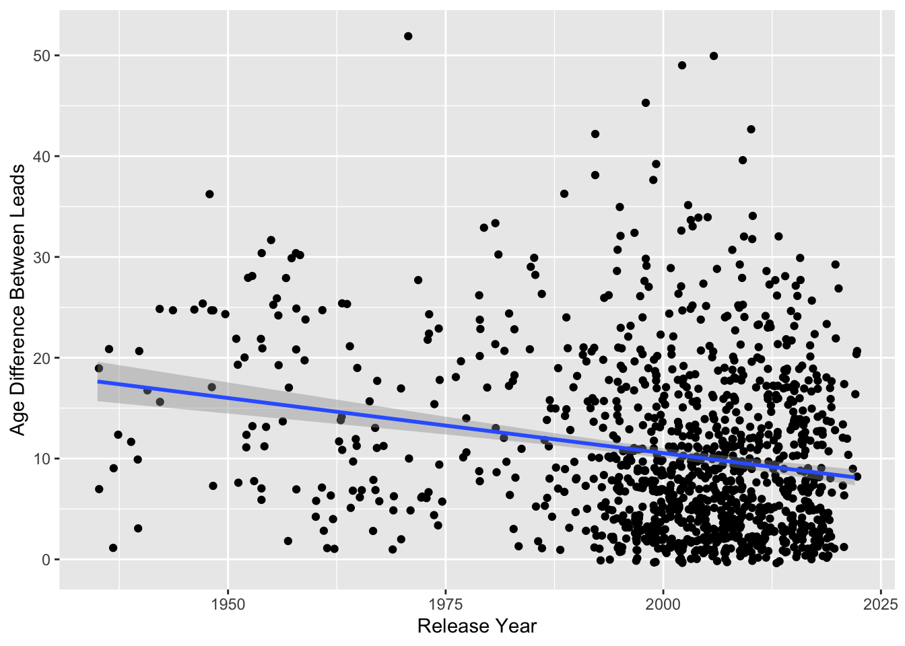

I found an interesting looking dataset on the Tidy Tuesday site about age gaps in movies, and I want to use this portfolio to see if I can uncover some interesting patterns in it.
The link the dataset is here: https://github.com/rfordatascience/tidytuesday/blob/master/data/2023/2023-02-14/readme.md
Let’s load what we need to start below:
library(tidyverse)
movies <- read.csv("/Users/lawilson1999/Desktop/Data Science Spring 2023/Portfolio/p05/movies.csv")The first question that jumps out: what was the movie with the greatest age gap between actors playing love interests?
max_diff <- movies$Age.Difference %>%
max()
max_diff## [1] 52movies %>%
filter(Age.Difference == max_diff) %>%
select(Movie.Name, Release.Year)## Movie.Name Release.Year
## 1 Harold and Maude 1971Similarly, we can see which movies have no age gap between leads:
movies %>%
filter(Age.Difference == 0) %>%
select(Movie.Name, Release.Year)## Movie.Name Release.Year
## 1 10 Things I Hate About You 1999
## 2 A Happening of Monumental Proportions 2017
## 3 A Simple Favor 2018
## 4 American Hustle 2013
## 5 American Pie 1999
## 6 Blue Valentine 2010
## 7 Catch Me If You Can 2002
## 8 Chicago 2002
## 9 Daddy's Little Girls 2007
## 10 Empire 2002
## 11 Good Will Hunting 1997
## 12 He's Just Not That Into You 2009
## 13 Killing Me Softly 2002
## 14 Magic Mike 2012
## 15 Me Before You 2016
## 16 Mona Lisa Smile 2003
## 17 Red Riding Hood 2011
## 18 She's Out of My League 2010
## 19 Slackers 2002
## 20 Soul Food 1997
## 21 Spanglish 2004
## 22 Speed 1994
## 23 Spider-Man: Far From Home 2019
## 24 The Crush 1993
## 25 The Holiday 2006
## 26 The Hunger Games: Catching Fire 2013
## 27 The Lake House 2006
## 28 Tolkien 2019
## 29 Transformers 2007
## 30 X-Men: First Class 2015Another question: how have age gaps in movies changed over time? I can imagine that really huge age gaps might have been more common in the past than they are today, and it would be interesting to visualize that change over time:
movies %>%
ggplot(aes(x = Release.Year, y = Age.Difference)) +
geom_jitter() +
geom_smooth(method = "lm")## `geom_smooth()` using formula = 'y ~ x'